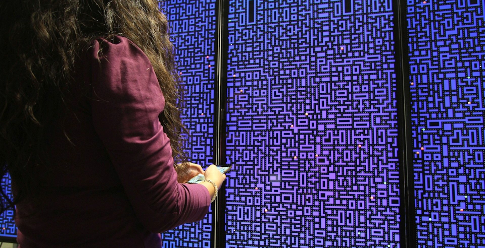

Pac-Many: Movement Behavior when Playing Collaborative and Competitive Games on Large Displays


Venue. CHI (2018)
Abstract. Previous work has shown that large high resolution displays (LHRDs) can enhance collaboration between users. As LHRDs allow free movement in front of the screen, an understanding of movement behavior is required to build successful interfaces for these devices. This paper presents Pac-Many; a multiplayer version of the classical computer game Pac-Man to study group dynamics when using LHRDs. We utilized smartphones as game controllers to enable free movement while playing the game. In a lab study, using a 4m × 1m LHRD, 24 participants (12 pairs) played Pac-Many in collaborative and competitive conditions. The results show that players in the collaborative condition divided screen space evenly. In contrast, competing players stood closer together to avoid benefits for the other player. We discuss how the nature of the task is important when designing and analyzing collaborative interfaces for LHRDs. Our work shows how to account for the spatial aspects of interaction with LHRDs to build immersive experiences.
Link to this page: